EXAMPLE 1: If $f(x,y) = xy^2+y + e^x,$ then $\frac{\partial f}{\partial x} = y^2+e^x.$ ■
Just the existence of $\frac{\partial f}{\partial x}$ and $\frac{\partial f}{\partial y}$ is not enough to guarantee the differentiability of $f.$ However, if the partial derivatives are also continuous over a neighbourhood of $(a,b),$ then $f$ must be differentiable at $(a,b).$EXAMPLE 2: If $f(x,y) = xy^2+y + e^x,$ then $\frac{\partial^2 f}{\partial y\partial x} = \frac{\partial}{\partial y}\left(\frac{\partial f}{\partial x} \right) = \frac{\partial}{\partial y}(y^2+e^x) = 2y.$
Also $\frac{\partial^2 f}{\partial x\partial y} = \frac{\partial}{\partial x}\left(\frac{\partial f}{\partial y} \right) = \frac{\partial}{\partial x}(2xy+1) = 2y.$ ■ Notice that they turn out to be equal in this example. This is mostly the case. There are pathological examples, where they are unequal. However, for all the cases we shall need they will be equal.EXERCISE 1: For each of the following functions find $\frac{\partial f}{\partial x}$, $\frac{\partial f}{\partial y}$ $\frac{\partial^2 f}{\partial y\partial x}$ and $\frac{\partial^2 f}{\partial x\partial y}.$
EXAMPLE 3: $\int_0^1\int_0^{y^2} xy\,dxdy = \int_0^1\left. \frac{x^2y}{2} \right|_0^{y^2} dy = \frac 12\int_0^1 y^5\,dy = \frac{1}{12}.$ ■
Just as a single variable integrals may be thought of as an area, an iterated integral in two variables may be considered as a volume. The iterated integral above gives the volume under the surface over the region shown below:EXERCISE 2: Find $\int_0^1 \int_{\sqrt{x}}^1 xy\, dydx.$
EXERCISE 3: What is the volume under the graph of $f(x,y) = x^2+y$ over the region $[0,1]\times[1,3]?$ Try both orders of integration ($x$ followed by $y$, and also $y $ followed by $x$).
EXAMPLE 4: $\int_0^1\int_0^1 xy^2\,dxdy = \int_0^1\left[\int_0^1 xy^2\,dx\right]dy = \int_0^1\left[y^2\int_0^1 x\,dx\right]dy =\int_0^1\frac 12y^2\,dy =\frac 16.$ ■
To visualise a joint density function, think of its graph as a surface hanging like a roof over the $xy$-plane. Then, for any rectangle in the $xy$-plane, the probability of $(X,Y)$ being inside that rectangle is the volume of the "tent" with the rectangle as its floor, and the surface as its roof. Indeed, thanks to the probability axioms, we can use this "volume of tent" idea for floors of shapes other than rectangles as well (e.g., countable unions/intersections of rectangles, and their complements). The following theorem is not unexpected.Proof:This is because the double integral denotes $P(X\in{\mathbb R},\,Y\in{\mathbb R})=1.$.[QED]
EXAMPLE 5: If $f(x,y) = \left\{\begin{array}{ll}c&\text{if }x^2+y^2\leq 1\\ 0&\text{otherwise.}\end{array}\right.$ is a density, then find $c.$
SOLUTION: The total area under the density is the volume of the cylinder with unit radius and height $c.$ This volume is $\pi c.$ So we need $\pi c = 1,$ i.e., $c = \frac 1\pi.$ ■EXAMPLE 6: Find $c\in{\mathbb R}$ such that $f(x,y) =\left\{\begin{array}{ll}c(x+y)&\text{if }0\leq x,y,\leq 2\\ 0&\text{otherwise.}\end{array}\right. $ is a density.
SOLUTION: We need $\int_{-\infty}^\infty\int_{-\infty}^\infty f(x,y)\, dx dy = 1,$ i.e., $$\int_0^2\int_0^2 c(x+y)\, dx dy = 1.$$ Now $$\int_0^2\int_0^2 c(x+y)\, dx dy = c\int_0^2\left[\int_0^2 c(x+y)\, dx\right] dy = c\int_0^2\left[ \frac 12x^2+xy\right]_0^2 dy=c\int_0^2( 2+2y)\, dy=8c.$$ So we need $8c=1$ or $c = \frac 18.$ ■EXERCISE 4: Find $c\in{\mathbb R}$ such that $f(x,y) =\left\{\begin{array}{ll}cxy&\text{if }0\leq x,y,\leq 2\\ 0&\text{otherwise.}\end{array}\right. $ is a density.
::EXERCISE 5: If $ax+by$ is a density on the unit square, what are the possible values for $a,b?$
::EXERCISE 6: Find $c\in{\mathbb R}$ such that $f(x,y) =\left\{\begin{array}{ll}ce^{-x-y}&\text{if }0\leq x,y,< \infty\\ 0&\text{otherwise.}\end{array}\right.$ is a density.
::EXERCISE 7: Find $c\in{\mathbb R}$ such that $f(x,y) =\left\{\begin{array}{ll}cye^{-x}&\text{if }0\leq x,y,< \infty\\ 0&\text{otherwise.}\end{array}\right. $ is a density
EXERCISE 8: Find $c\in{\mathbb R}$ such that $f(x,y) =\left\{\begin{array}{ll}cxy&\text{if }(x,y)\in[-1,1]\times[0,1]\\ 0&\text{otherwise.}\end{array}\right. $ is a density.
EXERCISE 9: [hpsjoint1.png]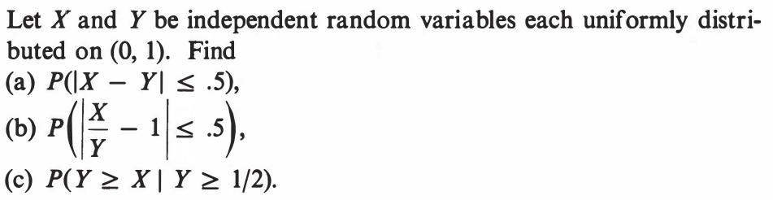
::EXERCISE 10: [hpsjoint2.png]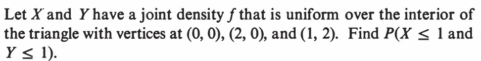
EXAMPLE 7: Let $(X,Y)$ have density $f(x,y) = \left\{\begin{array}{ll}x+y&\text{if }0\leq x,y\leq 1\\ 0&\text{otherwise.}\end{array}\right..$ Find $P(Y\leq X^2).$
SOLUTION: The random point $(X,Y)$ always lies in the unit square. Our set of interest is shown in red below.| 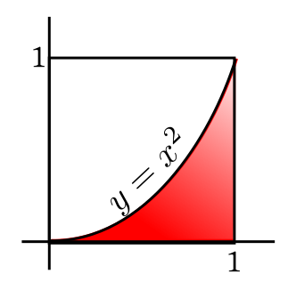 |
|---|
EXERCISE 11: Let $(X,Y)$ have joint density $f(x)=\left\{\begin{array}{ll}cxy&\text{if }x,y\in[0,1],\,x\leq y\\ 0&\text{otherwise.}\end{array}\right..$ Find $P(Y< \sqrt{X}).$
EXERCISE 12: Let $(X,Y)$ have joint density $f(x)=\left\{\begin{array}{ll}c(x+y)&\text{if }x,y\in[0,1]\\ 0&\text{otherwise.}\end{array}\right..$ Find $P\left(Y< \frac 12\right).$
EXERCISE 13: Let $X,Y$ be IID $Unif(0,1).$ Find $P(X^2\leq Y \leq X).$
EXERCISE 14: If $(X,Y)$ has joint density $e^{-(x+y)}$ for $x,y>0,$ (and 0 else), then find $P(X^2+Y^2<1).$ Leave the answer in terms of a single-variable integral.
EXAMPLE 8: Let $(X,Y)$ have uniform distribution over the unit square. Find its CDF, $F(x,y).$
SOLUTION: The values of $F(x,y)$ over certain regions of ${\mathbb R}^2$ should be clear, as shown below.| 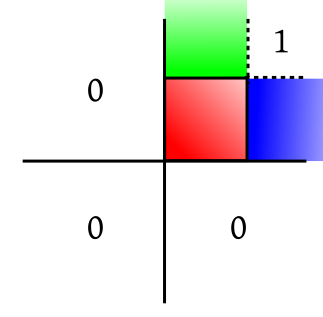 |
|---|
| The unit square is shown in red |
| 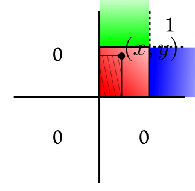 |
|---|
| 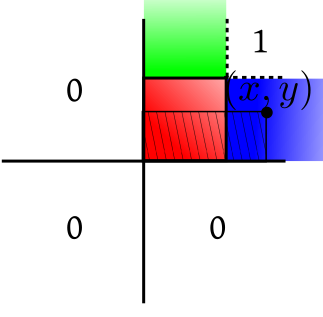 |
|---|
| 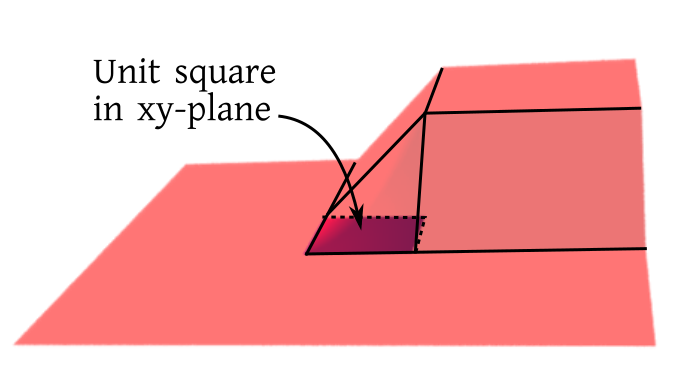 |
|---|
| The graph of the CDF |
EXAMPLE 9: Let $(X,Y)$ have density $f(x,y)=x+y$ over the unit square. Find its CDF, $F(x,y).$
SOLUTION: The red-blue-green break up remains the same here as in the last example, as the support of the distribution is the unit square. The values (0 and 1) of the CDF over the white regions are also as before. For $(x,y)$ in the red region, $$F(x,y) = \int_0^x\int_0^y (u+v)\, dudv = \int_0^x\frac 12y^2+yv\,dv = \frac 12xy^2+xy.$$ Similarly, work out the values for the blue and green regions. ■EXERCISE 15: Compute the remaining parts of the CDF in the example above.
EXERCISE 16: Find the CDF of $(X,Y)$ is the joint density is $f(x,y) = \left\{\begin{array}{ll}e^{-x-y}&\text{if }x,y>0\\ 0&\text{otherwise.}\end{array}\right.$
EXAMPLE 10: Let our CDF be $$F(x,y) = \left\{\begin{array}{ll}xy&\text{if }0< x,y\leq 1\\ x&\text{if }0<x\leq 1, y>1\\ y&\text{if }0<y\leq 1, x>1\\ 0&\text{if }x\leq 0\mbox{ or } y\leq 0\\ 1&\text{if }x, y>1\\ \end{array}\right.. $$ You are told that there is a density corresponding to it. Find one such density.
SOLUTION: Since we are about to differentiate wrt both $x$ and $y,$ the parts of $F(x,y)$ that do not involve both the variables must vanish. So we need to work with only the $xy$ part, which after the two differentiations would yield $1.$ So a density is $f(x,y) = \left\{\begin{array}{ll}1&\text{if }0<x,y<1\\ 0&\text{otherwise.}.\end{array}\right. $ ■EXERCISE 17: Find the joint CDF of $(X,Y)$ if $X\sim Bern(1/2)$ and $Y\sim Unif(0,1)$ and they are independent.
EXERCISE 18: Let $F(x,y)=\min\{x,y\}$ for $0\leq x,y\leq 1$ be the joint CDF of $(X,Y).$ Find $P\left(X\leq \frac 12, Y\leq \frac 12\right)).$
EXERCISE 19: If $(X,Y)$ have joint density $c(x^2+y)$ over the unit square, then find the joint CDF.
Proof: Fix any $y.$ Fix any $x_1 < x_2.$ Then $F(x_2,y)-F(x_1,y) = P(X\leq x_2, Y\leq y)-P(X\leq x_1, Y\leq y)=P(x_1< X\leq x_2, Y\leq y)\geq0.$
Hence the first result. Similarly for the other. [QED]Proof: Let $A = \{x-a < X \leq x,\, y-b < Y \leq y\}$, $B = \{x-a < X \leq x,\, Y \leq y\}$, $C = \{ X \leq x,\, y-b < Y \leq y\}$, and $C = \{ X \leq x-a,\, Y \leq y-b\}.$
| 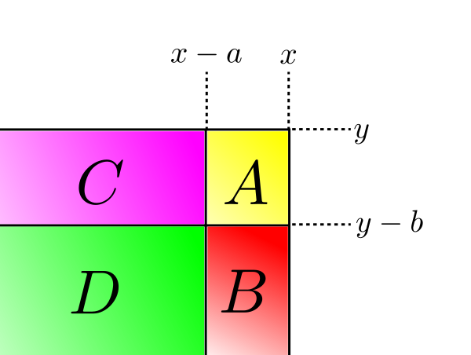 |
|---|
EXERCISE 20: Let $F(x,y)$ be CDF of $(X,Y).$ Then express $$\lim_{a,b\rightarrow0+} (F(x,y)-F(x-a,y)-F(x,y-b)+F(x-a,y-b))$$ as the probability of some familiar event.
EXERCISE 21: For a univariate CDF $F(x)$, the non-decreasing property was $\forall x\in{\mathbb R}~~\forall a>0~~F(x)-F(x-a)\geq 0.$ The proof was to note that this is $P(X\in(x-a,x])).$
For bivariate CDF $F(x,y)$ the non-decreasing property is $\forall x,y\in{\mathbb R}~~\forall a,b \geq 0~~ F(x,y)-F(x,y-b)-F(x-a,y)+F(x-a,y-b)\geq 0.$ The proof is to equate the lefd hand side to $P((X,Y)\in(x-a,x]\times(y-b,y]).$ Generalise this for trivariate CDFs. Drawing a picture would help. Remember the inclusion-exclusion principle.Proof: To show $$\forall \epsilon>0~~\exists M\in{\mathbb R}~~\forall x,y~~(\min\{x,y\}>M\Rightarrow F(x,y)>1-\epsilon).$$
Take any $\epsilon>0.$ Let $A_n\subseteq\Omega$ be defined as $A_n=\{X\leq n,\, Y\leq n\}.$ Then $A_n$'s increase and $\cup_n A_n = \Omega.$ So $P(A_n)\rightarrow 1.$ i.e., $F(n,n)\rightarrow 1$ as $n\rightarrow \infty.$ Hence $\exists M\in{\mathbb N}~~F(M,M)> 1-\epsilon.$ Choose this $M.$ Take any $x,y$ with $\min\{x,y\} > M.$ Then $F(x,y) \geq F(M,y) \geq F(M,M) > 1-\epsilon,$ as required. This completes the proof of the first result. The second result as a similar proof. [QED]Proof: Let $A_n=\{X\leq x_n,\, Y\leq y_n\}$ and $A=\{X\leq a,\, Y\leq b\}.$
Since $x_n\downarrow a$ and $y_n\downarrow b$, we have $A_n\downarrow A.$ Hence the theorem follows by continuity of probability. [QED]EXERCISE 22: Let $(X,Y)$ have joint CDF $F(x,y).$ Let $x_n\uparrow a$ and $y_n\uparrow b.$ Then is it true that $F(x_n,y_n)\uparrow F(a,b)$?
EXERCISE 23: Let $(X,Y)$ have joint CDF $F(x,y).$ Find $\lim_{n\rightarrow \infty} F(x_n,y_n)$ in each of the following cases. Express the limit as the probability of some event in terms of $X,Y$, whenever possible.
Proof: Let $a,b\in{\mathbb R}^2$ and $a_n\uparrow a$ and $b_n\uparrow b.$ We have $$F(a,b)-F(x_n,b)-F(a,y_n)+F(x_n,y_n)=P(X\in(a_n,a],\, Y\in(b_n,b]).$$ As $n\rightarrow \infty,$ the left hand side tends to $0,$ since $F(x,y)$ is continuous at $(a,b).$ Also the events $\{X\in(a_n,a],\,Y\in(b_n,b]\}\downarrow \{X=a,\, Y=b\}.$
So we have $P(X=a,\, Y=b)=0,$ as required. A counterexample for the converse is discussed in the exercise below. [QED]EXERCISE 24: Let $X\sim Bernoulli\left(\frac 12\right)$ and $Y$ and density $$f(x)=\left\{\begin{array}{ll}1&\text{if }x\in[0,1]\\ 0&\text{otherwise.}\end{array}\right.$$ Let $X$ and $Y$ be independent random variables. Write down and sketch the CDFs $F_X(x)$ and $F_Y(y)$ of $X$ and $Y.$ Their joint CDF is $F(x,y)=P(X\leq x,\, Y\leq y) =P(X\leq x)P( Y\leq y) = F_X(x)F_Y(y).$ Find it and fill in the cells below with appropriate formulae for $F(x,y).$ One cell has already been filled in for you.
[Because...]However, for bivariate or higher dimensional CDFs, the situation is drastically different.You can put rationals in the gaps.
EXERCISE 25: There are different ways to approach a point in ${\mathbb R}^2.$ The following diagram shows some of them.
| 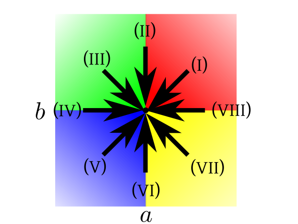 |
|---|
| $(a,b)$ is the point at the centre. |
$P(X < a,\, Y< b)$, $P(X \leq a,\, Y< b)$, $P(X < a,\, Y\leq b)$ and $P(X \leq a,\, Y\leq b).$
EXERCISE 26: (Continuation of the last exercise) In exactly three of the cases above we must have $\lim_{(x,y)\rightarrow(a,b)} F(x,y) = F(a,b).$ Which three?
EXERCISE 27: (Continuation of the last exercise) Argue that $F(x,y)$ is discontinuous at $(a,b)$ if and only if $P(X < a,\, Y< b) < P(X \leq a,\, Y\leq b).$
EXERCISE 28: (Continuation of the last exercise) Argue that $F(x,y)$ is discontinuous at $(a,b)$ if and only if $P(X \leq a,\, Y= b \mbox{ or }X = a,\, Y\leq b)>0.$
EXERCISE 29: (Continuation of the last exercise) Sketch the set $\{X \leq a,\, Y= b \mbox{ or }X = a,\, Y\leq b\}$ in the $XY$-plane for $(a,b) = (1,2)$ and also for $(a,b) = (1,3).$ Argue that either $F(x,y)$ has no discontinuity, or has uncountably many discontinuities.
Proof: The event $\{X\leq x,\,Y\leq y\}$ increases to $\{X\leq x\}$ and $y\rightarrow \infty$ and to $\{Y\leq y\}$ as $x\rightarrow \infty.$
Applying continuity of probability, we get the result. [QED] If $(X,Y)$ has a joint density, then we can obtain (marginal) densities of $X$ and $Y$ as follows.Proof: Enough to show that $\forall a\leq b\in{\mathbb R}~~P(a\leq X\leq b) = \int_a^b f_X(x)\, dx.$
Take any $a\leq b\in{\mathbb R}.$ Then $$P(a\leq X\leq b) = P(a\leq X\leq b,\, -\infty < Y < \infty) = \int_a^b \int_{-\infty}^\infty f(x,y)\, dy\, dx = \int_a^b f_X(x)\, dx,$$ as required. Similarly for $f_Y(y).$ [QED]EXERCISE 30: [hpsjoint4.png]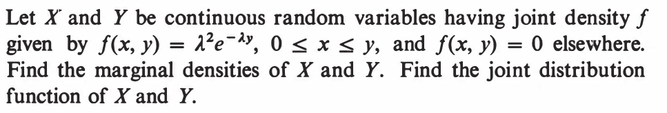
::EXERCISE 31: [hpsjoint5.png]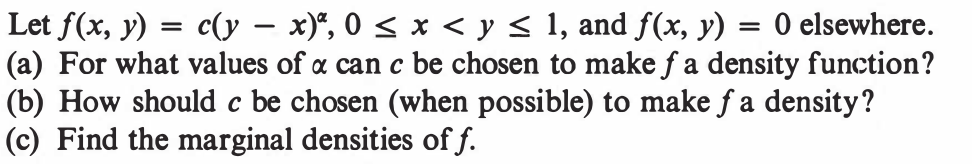
::EXERCISE 32: [hpsjoint6.png]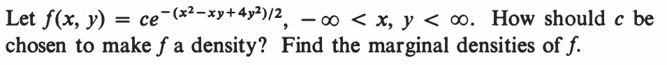
EXAMPLE 11: Suppose $X$ has density $f(x)=\left\{\begin{array}{ll}1&\text{if }x\in(0,1)\\ 0&\text{otherwise.}\end{array}\right.$ and $Y = X.$ Then show that $(X,Y)$ does not have a joint density.
SOLUTION: Here the CDF of $(X,Y)$ is $$ F(x,y)=P(X\leq x,\, Y\leq y) = P(X\leq\min\{x,y\}) = \left\{\begin{array}{ll}0&\text{if }\min\{x,y\}<0\\ \min\{x,y\}&\text{if }0\leq \min\{x,y\} < 1\\ 1&\text{if }\min\{x,y\} \geq 1\\\end{array}\right.. $$ Hence, if $(X,Y)$ indeed had a joint density, then a joint density would be given by $f(x,y)$, where $$f(x,y) = \frac{\partial^2}{\partial x\partial y} F(x,y).$$ This forces $f(x,y)\equiv 0,$ which is not a PDF. ■ However, if $(X,Y)$ has a joint density, then both $X$ and $Y$ must also have (marginal) densities.EXERCISE 33: If $X$ has density as above, then does $(X,X^2)$ have a joint density?
EXERCISE 34: Does there exist a CDF such that if $X$ has that CDF, then $(X,X)$ has a joint density?
Proof: If part: For any $x,y\in{\mathbb R}$ we have $$F(x,y) = P(X\leq x,\,Y\leq y) = \int_{-\infty}^y\int_{-\infty}^x f(x,y)\, dx\,dy =\int_{-\infty}^y\int_{-\infty}^x f_X(x)f_Y(y)\, dx\,dy = \left[\int_{-\infty}^xf_X(x)\,dx\right]\times\left[\int_{-\infty}^y f_Y(y)\,dy\right] = F_X(x)F_Y(y).$$
Only if part: Let $X,Y$ be independent. Let $f_X$ and $f_Y$ be densities for $X$ and $Y.$ Then for any $[a,b]$ and $[c,d]$ we have $$\int_a^b\int_c^d f_X(x)f_Y(y)\,dy\,dx =\int_a^b f_X(x) \, dx \int_c^d f_Y(y)\,dy = P(X\in[a,b])P(Y\in[c,d]) = P(X\in[a,b],\,Y\in[c,d]).$$ Hence $f_X(x)f_Y(y)$ is a joint density for $(X,Y).$ [QED] As in the discrete case, here also we have the result that if $X,Y$ are independent, and $E(X), E(Y)$ exist, then $E(XY)$ exists and equals $E(X)E(Y).$ The proof is straightforward using factorisation of joint density.EXERCISE 35: We toss two fair coins independently, and define 3 random variables $X,Y,Z$ based on the outcomes as follows. $X=1$ or $0$ according as the first toss shows head or not. Similarly, $Y=1$ or $0$ according as the second toss shows head or not. $Z=X$ if $Y=1$, else $Z=1-X.$ Show that $X,Y,Z$ are pairwise independent, but not mutually independent.
EXERCISE 36: If two independent random variables $X,Y$ have marginal densities $f(t) = e^{-\lambda t}$ for $t>0$ (and 0 else), then find the joint density of $(X,Y).$
EXERCISE 37: $(X,Y)$ is distributed uniformly over the unit disc in ${\mathbb R}^2.$ Are $X,Y$ independent?
EXERCISE 38: If the joint density of $(X,Y)$ is of the form $f(x)g(y),$ then show that $X$ and $Y$ must be independent. Also show that $f_X\propto f$ and $f_Y\propto g.$
EXERCISE 39: If $(X,Y)$ are independent, then is it true that the joint CDF is the product of the marginal CDFs?
EXERCISE 40: Let $(X,Y)$ have joint density $f(x,y) = g(x) h(y),$ where $g(\cdot)$ and $h(\cdot)$ are not necessarily density functions. Find margial densities of $X$ and $Y$, and show that $X$ and $Y$ must be independent.
Proof: This follows immediately from the general definition of expectation. [QED]
Again, as in univriate density case, we have a simpler formula for the special case where $E(|h(X,Y)|) < \infty.$ We have the definition of covariance and correlation as before: $$cov(X,Y) = E[(X-E(X))(Y-E(Y))] = E(XY)-E(X)E(Y),$$ and $$cor(X,Y) = \frac{cov(X,Y)}{\sqrt{V(X)V(Y)}}.$$ Cauchy-Schwartz inequality is also the same: $$cov(X,Y)^2\leq V(X) V(Y),$$ where iequality hold if and only $V(aX+bY) = 0$ for some $a,b\in{\mathbb R}.$ The proof that we showed in Probability I was general. An immediate coensequence is that $-1\leq cor(X,Y) \leq 1.$ Also $cor(X,Y)=1$ if and only if $V(Y-aX) = 0$ for some $a>0.$ SImilarly, $cor(X,Y)=-1$ holds if and only if $V(Y-aX) = 0$ for some $a < 0.$ Check if you remember the proofs.EXERCISE 41: Let $(X,Y)$ be uniformly distributed over $S=\{(x,y)~:~0\leq x\leq 1,~x\geq y\geq0\}.$
EXERCISE 42: Find $E(X^2Y)$ when $(X,Y)$ has joint density $$f(x,y) = \left\{\begin{array}{ll}x+y&\text{if }0< x,y < 1\\ 0&\text{otherwise.}\end{array}\right.$$
Proof: While the theorem holds for general random variables, we shall prove it here only for the case when $X,Y$ both have densitities, $f_X(x)$ and $f_Y(y)$, say.
Since $X,Y$ are independent, hence $(X,Y)$ must have joint density $f(x,y) = f_X(x)f_Y(y).$ We have to work with expectation of $XY$, which may take both positive and negative values. So we cannot immediately apply the integration formula for expectation. Here this result will come to our help: for a random variable $Z$ we have $E(Z)$ finite if and only $E(|Z|)< \infty.$ We had seen its proof in Probability I (easy proof: $Z=Z_+-Z_-$ and $|Z|=Z_++Z_-$). The advantage of working with $E(|Z|)$ instead of $E(Z)$ is that $|Z|$ is non-negative, and hence always has well-defined expectation (though possibly $\infty$). We shall first show that $E(|XY|)< \infty,$ which will show the $E(XY)$ is finite, and will let us apply the integration formula. Since $|XY|$ is non-negative, hence we can use the integration formula for it: $$\begin{eqnarray*} E(|XY|) & = & \int_{-\infty}^\infty\int_{-\infty}^\infty |xy| f(x,y)\, dx\, dy\\ & = & \int_{-\infty}^\infty\int_{-\infty}^\infty |xy| f_X(x)f_Y(y)\, dx\, dy\\ & = & \int_{-\infty}^\infty |x|f_X(x)\,dx\int_{-\infty}^\infty |y| f_Y(y)\, dy\\ & = & E(|X|)E(|Y|)<\infty. \end{eqnarray*}$$ Now we are entitled to use the integration formula for $E(XY),$ and so the same logic as above gives $$\begin{eqnarray*} E(XY) & = & \int_{-\infty}^\infty\int_{-\infty}^\infty xy f(x,y)\, dx\, dy\\ & = & \int_{-\infty}^\infty\int_{-\infty}^\infty xyf_X(x)f_Y(y)\, dx\, dy\\ & = & \int_{-\infty}^\infty xf_X(x)\,dx\int_{-\infty}^\infty y f_Y(y)\, dy\\ & = & E(X)E(Y). \end{eqnarray*}$$ [QED] Two points to be noted about this theorem:EXERCISE 43: Real analysis tells us that $\sum \frac{1}{n^3} < \infty.$ Call this $c.$ We can manufacture the following PMF from this: $$p(x) = \left\{\begin{array}{ll}\frac{1}{c x^3}&\text{if }x\in{\mathbb N}\\ 0&\text{otherwise.}\end{array}\right.$$ Let $X$ be a random variable with this PMF. Let $Y = X.$ Show that $E(X), E(Y)$ are both finite, though $E(XY)$ is not finite.
EXERCISE 44: Play with the last exercise to come up with a counterexample where $E(X), E(Y)$ are both fnite, but $E(XY)$ does not exist.
EXERCISE 45: Let $X$ have density $f(x) =\left\{\begin{array}{ll}\frac 12&\text{if }|x| < 1\\ 0&\text{otherwise.}\end{array}\right. $ Let $Y = X^2.$ Are $X,Y$ independent? Show that $E(XY) = E(X)E(Y).$
EXERCISE 46: If $X_1,...,X_n$ are IID with mean 2 and variance 5, and $\v X = (X_1,...,X_n)'$, then find $E(\v X)$ and $V(\v X).$
EXERCISE 47: If $X_1\sim Binom\left(10,\frac 13\right)$ and $X_2=10-X_1$ and $\v X = (X_1,X_2)'$ then find $E(\v X)$ and $V(\v X).$
EXERCISE 48: Let $\v X = (X_1,X_2,X_3)'$ have $$V(\v X) = \left[\begin{array}{ccccccccccc} 3 & 2 & 1\\ 2 & 4 & 2\\ 1 & 2 & 5 \end{array}\right].$$ Find $cor(X_1,X_3).$
EXERCISE 49: In the last problem, also find $V(X_1-3X_2)$ and $cov(X_1+X_2,X_3).$
| 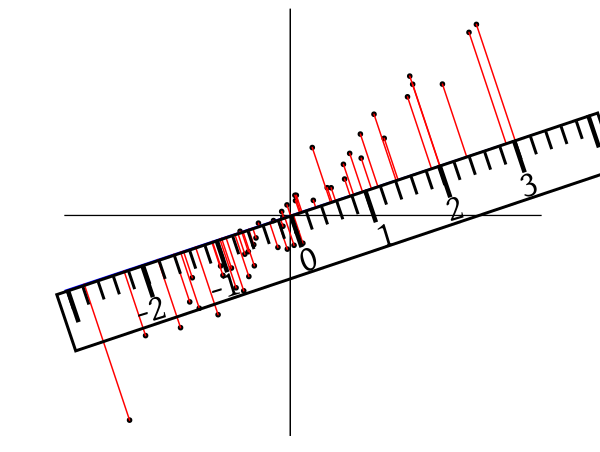 |
|---|
| Light rays (shown in red) are dropping perpendicularly on the ruler |
| 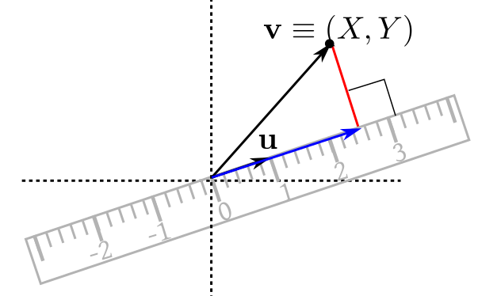 |
|---|
| Projecting a typical point perpendicularly on the ruler |
EXERCISE 50: Consider the toy bivariate data set $(1, 2), (3, 4), (2.1, 3.1), (4, 5).$ Draw the scatterplot. Imagine that we are looking down as shown. Guess the variance as seen from that direction. Check your guess by actual computation.
EXERCISE 51: Let the dispersion matrix of $(X,Y)$ be $\left[\begin{array}{ccccccccccc}1 & 0\\0 & 2 \end{array}\right]$. Find $\theta\in [0,\pi)$ such that $V(\cos (\theta) X + \sin(\theta) Y)$ is maximum. When is the variance minimum.
Proof: Let $\v Y = A\v X+\v b.$ Then $\v Y = (Y_1,...,Y_m)'$, where $Y_i = \sum_j a_{ij}X_j + b_i.$ Here I have denoted the $(i,j)$-th entry of $A$ by $a_{ij}.$
Now compute $E(Y_i)$ and $cov(Y_i,Y_j)$ directly to get the result. By the way, the $(i,j)$-th entry of $A\Sigma A'$ is $\sum_r\sum_s a_{ir} \sigma_{rs} a_{js}.$ [QED]Proof: By the last theorem, $\v\ell'\Sigma\v\ell=V(\v\ell'\v X)\geq 0.$ [QED]
The converse is also true:Proof: Let $U_1,...,U_n$ be independent with $\forall i~~V(U_i)=1.$ Then $\v U= (U_1,...,U_n)'$ has $V(\v U) = I_n.$
Since $\Sigma$ is NND, hence $\Sigma = AA'$ for some $A_{n\times n}.$ Let $\v X = A\v U.$ Then $V(\v X) = A I_n A' = AA' = \Sigma.$ [QED]EXERCISE 52: Show that for $\left[\begin{array}{ccccccccccc}a & b\\b & c \end{array}\right]$ to be a dispersion matrix, a necessary condition is that $b^2\leq ac.$ Is it a sufficient condition?
EXERCISE 53: Show that $V(\v X)$ is singular if and only if $P(a_1X_1+\cdots+a_n X_n=c)=1$ for some constants $a_i$'s and $c$ such that not all $a_i$'s are zero.
EXERCISE 54: If $\v X=(X,Y)'$ and $V(\v X)$ is a singular, then how will a scatterplot of replications from $\v X$ look like? Here we are running the random experiment underlying $\v X$ repeatedly, and getting $(X_1,Y_1), (X_2,Y_2),...,(X_n,Y_n),$ and plotting these $n$ points as a scatterplot. Your job is a to identify some geometric pattern in the plot.
EXERCISE 55: Find conditional density of $X$ given $Y=\frac 12$ if the joint density of $(X,Y)$ is
$$f(x,y) = \left\{\begin{array}{ll}x+y&\text{if }0< x,y < 1\\ 0&\text{otherwise.}\end{array}\right.$$Proof: This is obvious from the definition of $f_{Y|X}(x,y):$ $$\begin{eqnarray*} \int_c^d \int_a^bf_{X|Y}(x,y)f_Y(y)\, dx\,dy & = & \int_c^d \int_a^b\frac{f(x,y)}{f_Y(y)}f_Y(y)\, dx\,dy\\ & = & \int_c^d \int_a^b f(x,y)\,dx\,dy\\ & = & P(X\in [a,b], Y\in[c,d]).\end{eqnarray*}$$ [QED]
It is this theorem that justifies the definition of conditional PDF. As in the discrete case, here also we have concepts of conditional expectation, conditional variance etc. The tower property also works as before, as do the relation between conditional and unconditional variances:Proof: Enough to show the first, since the other two follow from it (as we have already seen last semester).
Let $f(x,y)$ be a joint density of $(X,Y).$ Then $$E(X|Y=y) = \int_{-\infty}^\infty xf_{X|Y}(x,y)\, dx = \frac{\int_{-\infty}^\infty xf(x,y)\, dx}{f_Y(y)}.$$ So $$E(E(X|Y)) = \int_{-\infty}^\infty\frac{\int_{-\infty}^\infty xf(x,y)\, dx}{f_Y(y)}f_Y(y)\, dy = \int_{-\infty}^\infty\int_{-\infty}^\infty xf(x,y)\, dx\, dy =E(X),$$ as required. [QED]EXERCISE 56: If $(X,Y)$ is uniformly distributed over the triangle $\{(x,y)~:~0\leq x \leq y,\, 0\leq y\leq 1\}.$ Guess a conditional density of $X$ given $Y=y?$ First try to guess, and then check it from the definition.
EXERCISE 57: Let $X|Y=y$ have density $f_{X|Y}(x,y) = \left\{\begin{array}{ll}c_y x^2&\text{if }x\in[0,y]\\ 0&\text{otherwise.}\end{array}\right.$, where $c_y$ is free of $x.$ Let $Y$ be uniformly distributed over $[0,1]$. Find $f_{Y|X=x}(y,x).$
EXERCISE 58: If $(X,Y)$ has joint density $f(x,y)=\left\{\begin{array}{ll}x+y&\text{if }0\leq x,y\leq 1\\ 0&\text{otherwise.}\end{array}\right.,$ then find $E(X|Y=y)$ and $V(Y|X=x).$
EXAMPLE 12: In a box we have 10 balls 4 of which are black, the rest being light magenta (with a tinge of yellow on one side). 2 balls are drawn one by one using SRSWOR. Let $X_1=$ the indicator of the $i$-th selected ball being black ($i=1,2$). Then show that $X_1,X_2$ are exchangeable.
SOLUTION:| $X_2=0$ | $X_2=1$ | |
| $X_1=0$ | $\frac{6\times5}{10\times9}$ | $\frac{6\times4}{10\times9}$ |
| $X_1=1$ | $\frac{4\times6}{10\times9}$ | $\frac{4\times3}{10\times9}$ |
EXERCISE 59: We have $n$ balls $m$ of which are dark purple (the rest being of a nondescript colour). We draw an SRSWOR of $k$ balls. Let $X_i=$ the indicator of the $i$-th selected ball being dark purple. Show that $X_1,...,X_k$ are exchangeable.
EXERCISE 60: Consider Polya's urn scheme (5 black 5 white to start with, 1 ball drawn at each step, replaced and 1 more ball of the observed colour added). Let $X_i=$ indicator of the $i$-th drawn ball being black. Show that $X_1,X_2,...,X_n$ are exchangeable for $n\in{\mathbb N}.$
Proof: Let $F(x_1,...,x_n)$ be the joint CDF of $(X_1,...,X_n).$
Let $\pi$ be any permutation $\{1,...,n\}$ with $\pi(1)=i_1, ..., \pi(k)=i_k.$ Then by exchangeability $F(x_1,...,x_n)$ is the joint CDF of $(X_{\pi(1)},...,X_{\pi(n)})$ as well. Then the joint CDF of $(X_{i_1},...,X_{i_k})$ is $F(x_1,...,x_k,\infty,...,\infty),$ which is free of $i_1,...,i_k,$ as required. [QED] Exchangeable random variables allow for symmetry arguments. The next problem is one example.EXERCISE 61: If $X_1,...,X_n$ are exchangeable positive random variables with finite expectations, then find $E((X_1+X_2)/(X_1+\cdots+X_n)).$
EXERCISE 62: Three dice are rolled and their outcomes are called $X_1,X_2$ and $X_3.$ Let $Y_1 = X_1+X_2,$ $Y_2 = X_2+X_3,$ and $Y_3 = X_3+X_1.$ Is $(Y_1,Y_2,Y_3)$ exchangeable? Justify your answer.
EXERCISE 63: A box contains 10 balls numbered 1 to 10. A ball is drawn at random, and its number noted. Without replacing the ball, another ball is drawn at random from the rest, and its number is also noted. If the two numbers are $X$ and $Y$, respectively, then is $(X,Y)$ exchangeable?
EXERCISE 64: (Continuation of the last exercise) Solve the last problem if at each step the ball with number $i$ on it is selected with probability proportional to $i.$
EXERCISE 65: [hpsjoint3.png]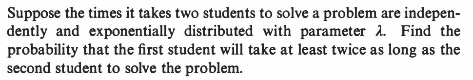
::EXERCISE 66: [hpsjoint7.png]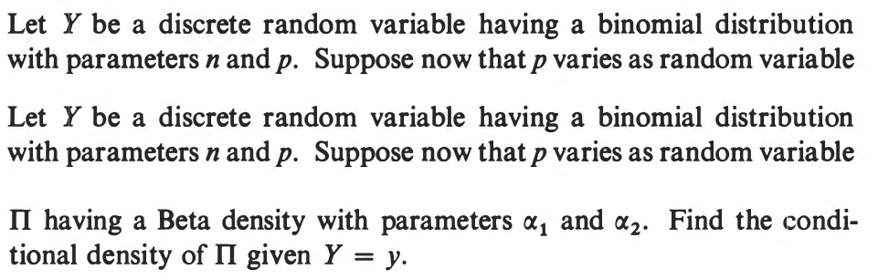
::EXERCISE 67: [hpsjoint8.png]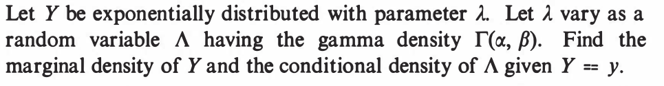
::EXERCISE 68: [hpsjoint9.png]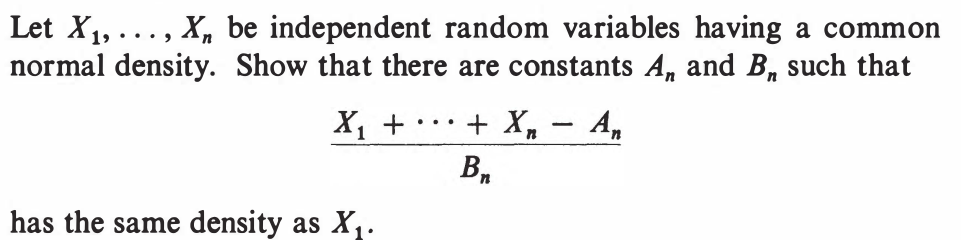
::EXERCISE 69: [hpsjoint10.png]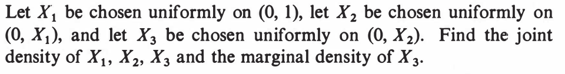
::EXERCISE 70: [hpsjoint11.png]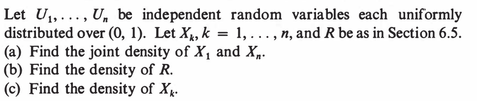
Here $X_i = U_{(i)}$ in our notation, and $R=U_{(n)}-U_{(1)}$ is the range of the $U_i$'s. I think this problem should better be attacked after learning about order statistics in the next chapter. ::EXERCISE 71: [rossipmjoint1.png]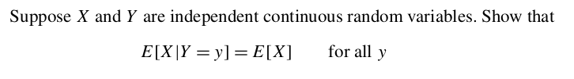
::EXERCISE 72: [rossipmjoint2.png]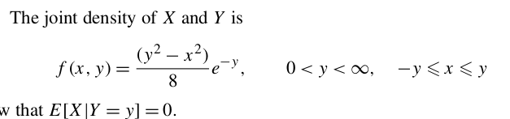
::EXERCISE 73: [rossipmjoint3.png]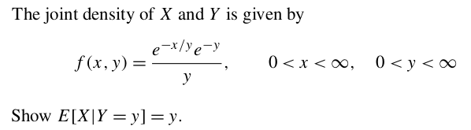
::EXERCISE 74: [rossipmjoint4.png]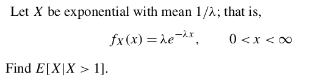
::EXERCISE 75: [rossipmjoint5.png]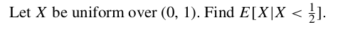
::EXERCISE 76: [rossipmjoint6.png]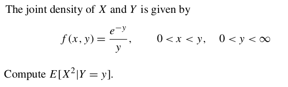
::EXERCISE 77: [rossipmjoint8.png]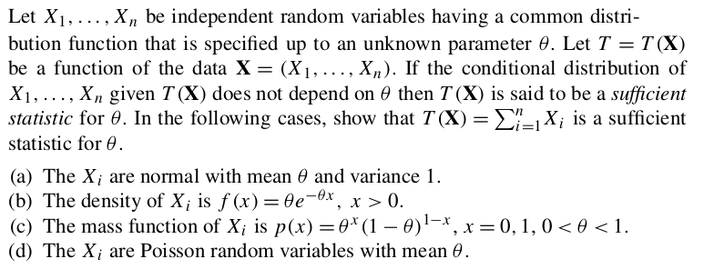
::EXERCISE 78: [rossipmjoint9.png]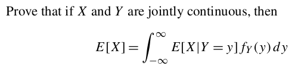
::EXERCISE 79: [rossipmjoint10.png]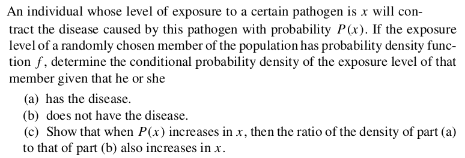
::EXERCISE 80: [rossipmjoint11.png]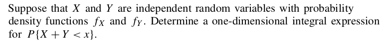
::EXERCISE 81: [rossipmjoint12.png]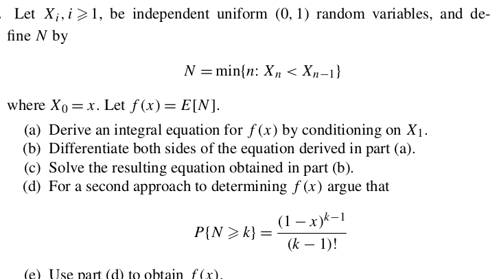
::EXERCISE 82: [rossipmjoint13.png]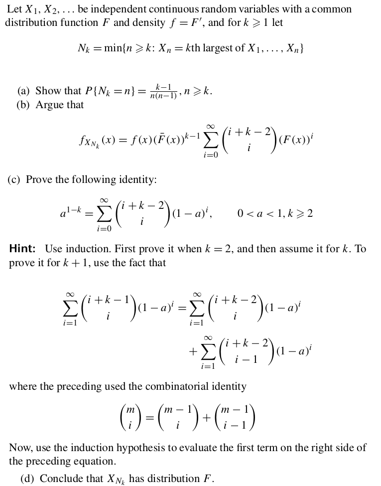